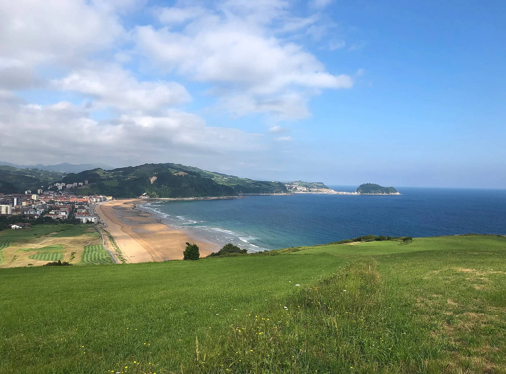

Zarautz
Pays Basque, Espagne · surf

La plus longue plage du Pays Basque espagnol, beach break régulier et animé.
- Lieu
- Pays Basque, Espagne
- Niveau
- Intermédiaire
- Activités
- surf
- Type d'eau
- Mer / océan
- Coordonnées
- 43.28, -2.17 (position approximative du secteur)
Dangers à connaître
- Très fréquenté.
- Baïnes.
Le conseil d'Ocean Buddy
Bon spot de progression ; surfe le matin pour éviter la foule.
Ouvrir dans Ocean Buddy Télécharger sur l'App Store
Source : Description historique Ocean Buddy · vérification externe en attente.